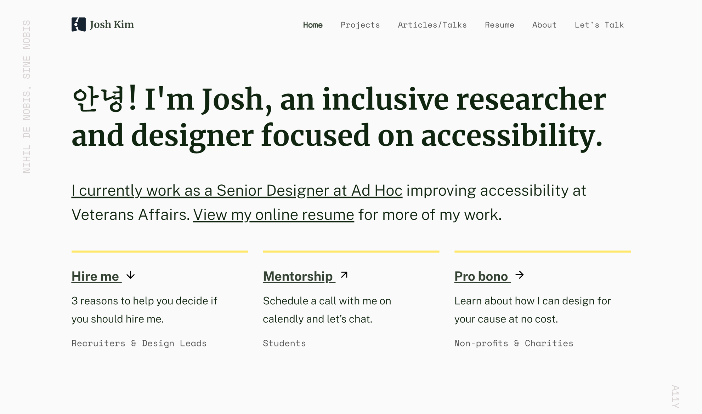
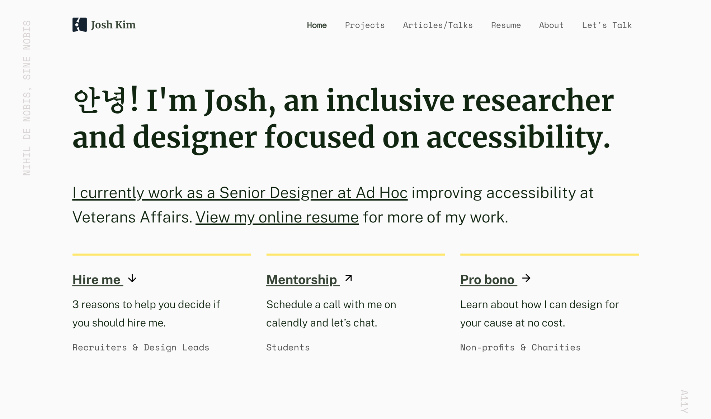

2020 in Review
About Face
I flipped my approach to design based on the lessons I learned in 2019 by:
- prioritizing inclusion over magic; e.g. designing forms to be one thing per page instead of being dependent on react-based interactions
- serving as a facilitator, not an expert; e.g. empowering medical professionals and Veteran service officers across the country to inform design changes that can mitigate retraumatization of Veterans
- using new mediums to shift my perspective; e.g. studying for my IAAP WAS certification and using screen readers to redesign and develop my portfolio from the ground up
 
